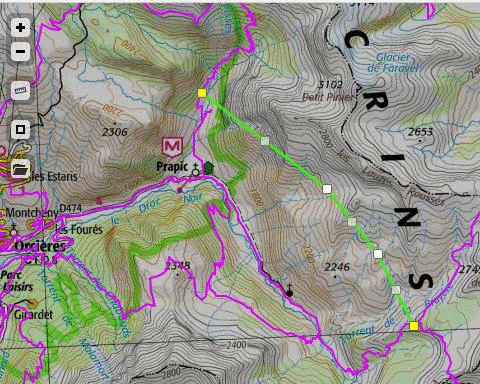
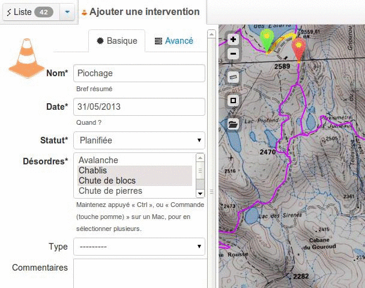
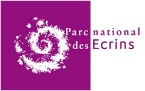
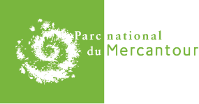

Geotrek est une application web permettant d'assurer la gestion des sentiers et la valorisation des itinéraires de randonnées.
Elle se compose ainsi d'une application métier à usage interne permettant d'administrer l'ensemble des données relatives aux sentiers et d'une application accessible à tous permettant de consulter l'offre de randonnées.
Fonctionnalités principales
- Gestion topologique des sentiers
- Géométries 3D et profils altimétriques
- Notion de structure au sein du parc ( parcs transfontaliers, communautés de communes, etc. )
- Authentification interne ou externe ( LDAP, vue/table, ... )
- Impression PDF/OpenOffice/MSOffice
- Exports Shapefile/CSV/GPX/image
- Imports GPX/KML/GeoJSON pour la saisie
- Attachement de fichiers/photos
- Support fonds carte WMS/IGN
- Web API
- Multilingue ( français, anglais, italien, ... )
Téléchargez la fiche produit !

Modules métiers
Aménagements
- Signalétique
- Équipements ( WC, tables... )
- Ouvrages ( escaliers, murets... )
Travaux
- Demandes d'interventions ( points ou lignes, sur tronçons ou sur infrastructures )
- Chantiers, prestataires, financements
- Gestion du budget

Offre de randonnée
- Itinéraires
- Points d'intérêt
- Thèmes, difficulté, ...
- Profils altimétriques
- Affichage plein écran
- Fiches imprimables
- Tracés au format GPX, KML
- Vue 3D ( WebGL )
{kind=link}
Foncier / Administratif
- Gestion des communes, zones, secteurs
- Gestion des types de tronçons ( route, piste... )
- Gestion des types fonciers ( communal, domanial, privé... )
- Zones de compétence, de responsabilité de travaux ou signalétique
Technologies
- PostGIS 2
- python | Django
- Javascript | Leaflet
Actualités
Juillet 2013 - Le portail rando du Parc national des Écrins
Geotrek permet d'assurer la gestion des sentiers (tronçons, aménagements, signalétique, travaux, gestionnaires...) mais aussi de publier une offre de randonnées. Le Parc national des Écrins vient de mettre en ligne son portail rando : http://rando.ecrins-parcnational.fr
Le choix des randonnées s'effectue grâce à des filtres de recherche qui permettent de trouver un itinéraire adapté à son niveau, son envie ou encore en fonction de la thématique patrimoniale. Pour chaque itinéraire, un garde moniteur du Parc national a mis en avant le patrimoine naturel, paysager et culturel afin de partager sa connaissance du territoire. Une large photothèque permet d'illustrer ses propos. Pour passer du "virtuel" à la pratique chaque fiche itinéraire est imprimable et son tracé est exportable vers un GPS ou Google Earth pour une visualisation en 3D.
Juin 2013 - Geotrek au FROG 2013
L'application Geotrek a été présenté à la conférence FROG FRancophone Open source Géomatique qui a eu lieu dans les locaux de l'IGN lundi 10 juin 2013. Celle-ci est une journée de conférences dédiées a la géomatique libre et aux données géographiques libres, organisée par l'association OSGeo-fr. Visionner la présentation
Mai 2013 - Geotrek dans Géomatique Expert
La revue bimestrielle Géomatique Expert s'est intéressée au projet Geotrek et y consacre un article de 5 pages dans son numéro 32 de Juin-Juillet 2013. Retrouvez l'article page 56 qui s'appuie sur 2 entretiens avec le Parc national des Écrins et la société Makina-Corpus. http://www.geomag.fr
Documentation
Installation and configuration instructions
Tutoriaux :
- Drappage de lignes sur un MNT
- Utiliser les topologies PostGIS pour nettoyer un filaire de voirie
- Debug PostgreSQL triggers with Django ( en )
- Leaflet et tuiles en Lambert-93 ( en )
L'édition des objets s'effectue en 2D, et leur géométrie est drappée automatiquement en 3D sur un Modèle Numérique de Terrain stocké en base au format raster.
Le socle de l'application repose sur un réseau topologique de tronçons, qui permet d'assurer le découpage des arrêtes aux intersections, ainsi que le "magnétisme" (snapping) des noeuds du réseau.
Toutes les géométries des objets sont décrites à partir du réseau, en utilisant la segmentation dynamique. Un ensemble de déclencheurs calcule les géométries résultantes à la création et lors de modifications sur ce réseau de tronçons. Cela permet de garantir une cohérence géométrique et topologique entre les tronçons et tous les objets, mais aussi d'associer ces derniers entre eux en vérifiant leur superposition sur le réseau.
Une série de tests automatiques est exécutée à chaque modification du code source, garantissant la robustesse et les non-régressions.
Composants libres
L'application Geotrek a été conçue et modélisée par le Parc national des Ecrins qui s'est associée au Parc national du Mercantour et au parc italien Alpi-Marittime pour lancer un appel d'offre fin 2010. C'est la société Makina Corpus qui a été retenue pour développer le projet. Rapidement le choix a été fait de développer une application la plus générique et la plus portable possible. Son usage devenait alors potentiellement intéressant pour un grand nombre d'autres structures et les partenaires ont décidé de libérer l'ensemble du projet sous licence open source sur la forge github.
Par ailleurs, le développement de l'application a reposé exclusivement sur des briques open source dont la librairie javascript Leaflet et le framework Django. Le projet a été l'occasion d'y ajouter de nouvelles fonctionnalités qui ont été publiées sous forme de plugins :
- Leaflet.FileLayer: Permet d'ajouter un contrôle à la carte pour charger et afficher des fichiers GPX, GeoJSON ou encore KML.
- LeafLet.GeometryUtil: Collection d'outils géométriques (interpolation linéaire, etc.)
- LeafLet.Snap: Snapping (magnétisme) entre objets pour l'édition avec Leaflet.Draw.
- LeafLet.LayerIndex: Indexation spatiale des couches vectorielles.
- LeafLet.TextPath: Permet d'afficher un texte ou des symboles le long d'une ligne.
- LeafLet.Spin: Affichage simplifiée d'un curseur de chargement spin.js.
LeafLet.RestoreView: Restaure l'emprise de la carte à la précédente visite.
django-leaflet: Intégrer Leaflet dans un projet Django.
django-geojson: Sérialiser des modèles Django au format GeoJSON.
django-screamshot: Captures image de pages Web.
django-appypod: Générer des documents LibreOffice depuis des vues Django.
convertit: Web API de conversion de documents génériques.
Licence
- OpenSource - BSD
- Copyright (c) Parc National des Écrins - Parc National du Mercantour - Parco delle Alpi Marittime - Makina Corpus
Geotrek a été conçu par le Parc national des Ecrins, le Parc national du Mercantour et la Parco Alpi Marittime et a été développée par Makina Corpus.

Geotrek a été cofinancée pour les 3 parcs nationaux par l’Union Européenne (ALCOTRA, FEDER).
Pour plus d'informations : projets-sig@makina-corpus.com